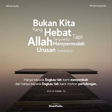
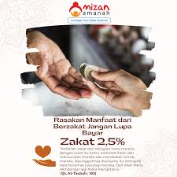

Faedah Sirah Nabi: Peristiwa Hudaibiyah
Pada perjanjian Hudaibiyah, umat Islam belajar tentang pentingnya kesabaran dan strategi dalam perjuangan untuk agama...
Baca Selengkapnya »
Tiga Syarat Meraih Surga
Cinta kepada Allah, takut akan murka-Nya, dan beramal saleh menjadi jalan utama bagi umat Islam untuk meraih Surga-Nya...
Baca Selengkapnya »
Khutbah Jumat: Bahaya Zina dan Media Sosial
Media sosial dapat menjadi pintu masuk perbuatan dosa jika tidak digunakan dengan bijak, termasuk dalam hal zina dan fitnah...
Baca Selengkapnya »

Mencari Berkah di Langkah Hidup
Langkah yang diberkahi adalah langkah yang disandarkan pada petunjuk Allah SWT dan mengikuti sunnah Rasul-Nya...
Baca Selengkapnya »
Pentingnya Shalat Tahajud dalam Kehidupan
Shalat Tahajud adalah salah satu amalan yang sangat dianjurkan dalam Islam untuk mendapatkan kedekatan dengan Allah SWT...
Baca Selengkapnya »

Zakat: Keberkahan dan Kepedulian Sosial
Zakat bukan hanya kewajiban, tetapi juga menjadi sarana untuk membersihkan harta dan membantu mereka yang membutuhkan...
Baca Selengkapnya »